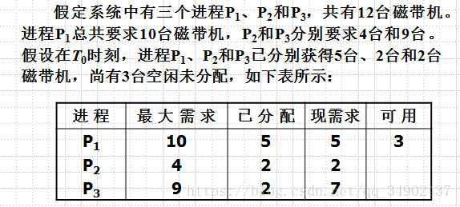

<!DOCTYPE html>
<html>
  <head>
  <title>38、死锁处理办法</title>
  <meta http-equiv="Content-Type" content="text/html; charset=utf-8" />
  <meta name="viewport" content="width=device-width, initial-scale=1.0">
  <link rel="stylesheet" href="../css/md.css">
  </head>

  <body>
  <div>
  <table>
  <tr><td><b>创建时间：</b></td><td><i>2020/04/26 19:31</i></td></tr>
  <tr><td><b>作者：</b></td><td><i>lzr</i></td></tr>
  </table>
  </div>


  <h1 id="-">死锁处理办法</h1>
  <h4 id="-">四种方法</h4>
  <ul>
  <li>死锁预防</li><li>死锁避免</li><li>死锁检测</li><li>死锁恢复</li></ul>
  <h4 id="-">几种思路</h4>
  <ul>
  <li>确保系统永远不会进入死锁状态</li><li>运行系统进入死锁状态，然后恢复</li><li>忽略这个问题，假装系统中从来没有发生过死锁：用于大多数操作系统，包括unix<ul>
  <li>原因：<br>1、判断死锁开销大<br>2、约束太多，操作系统的功能会受到很大的限制</li></ul>
  </li></ul>
  <h2 id="-">死锁预防</h2>
  <h4 id="-">限制申请方式</h4>
  <ul>
  <li>互斥：共享资源部署必须的，必须占用非共享资源</li><li>占用并等待：必须保证当一个进程请求的资源，它不持有任何其他的资源<ul>
  <li>需要进程请求并分配器所有资源，它开始执行之前允许进程请求资源仅当进程没有资源。</li><li>资源利用率低，可能发生饥饿</li><li>（差不多就是 我要么全要，要么一个都不要）</li></ul>
  </li></ul>
  <h4 id="-">无抢占</h4>
  <ul>
  <li>如果进程占用某些资源，并请求其他不能被立即分配的资源，则释放当前正占有的资源</li><li>被抢占资源添加到资源列表中</li><li>只有当它能够获得旧的资源以及它请求新的资源，进程可以得到执行</li><li>相当于就是把这个进程杀掉，它所占用的资源就全都释放了，很强势的一种处理方式</li></ul>
  <h4 id="-">循环等待</h4>
  <ul>
  <li>对所有的资源类型进行排序，并要求每个进程按照资源的顺序进行申请</li><li>在嵌入式操作系统中比较多（资源类型比较有限）</li></ul>
  <h2 id="-">死锁避免</h2>
  <p>在进程申请资源之前，先看看当前它需要的资源的状态</p>
  <h4 id="-">需要系统具有一些额外的先验信息提供</h4>
  <ul>
  <li>最简单和最有效的模式是要求每个进程声明它可能需要的每个类型资源的<strong>最大数目</strong></li><li>资源的分配状态是通过限定<strong>提供</strong>与<strong>分配</strong>的资源数量，和进程的最大需求。</li><li>死锁避免算法动态检查的资源分配状态，以确保永远不会有一个环形等待状态。</li></ul>
  <h4 id="-">安全状态</h4>
  <ul>
  <li>当一个进程请求可用资源，系统必须判断立即分配是否能使系统处于安全状态</li><li>系统处于安全状态是指：针对所有进程，存在安全序列</li><li><strong>序列<P1,P2,P3,P4....Pn>是安全的</strong>：针对每个Pi,Pi要求的资源能够由当前可用的资源+所有的Pj持有的资源来满足，其中j&lt;i。<ul>
  <li>如果Pi资源的需求不是立即可用，那么Pi可以等到所有Pj完成。</li><li>当Pi完成后，Pi+1可以得到所需要的资源，执行，返回所分配的资源并终止。</li><li>同样的方法，Pi+1,Pi+2,Pi+3...Pn能获得所需要的资源。</li><li>（只要找到符合该情况的执行序列就可以保证安全）</li></ul>
  </li><li>例如：<blockquote>
  <p>按照 <P2,P1,P3>的推进序列使用磁带机就是安全的。</p>
  <p>我们来看</p>
  <p>现在的可用（可以分配）的资源数是 3 ，而 P2 需&gt;要的资源数是 2，所以可以分配<br>待 P2 执行完毕后，释放资源数为 4，变成可用资源，加上之前剩余的可用资源数，一共是 5 个<br>观察到 P1 需要 5 个，所以分配给 P1<br>P1 执行完后释放资源数为 10，变成可用资源<br>而 P3 只需要 7 个，所以分配 7 个可用资源个 P3<br>P3 运行完毕</p>
  </blockquote>
  </li></ul>
  <h4 id="-">安全状态和死锁的关系</h4>
  <ul>
  <li>如果系统处于安全状态一定无死锁</li><li>处于不安全状态可能死锁</li><li><strong>避免死锁</strong>：确保系统永远不会进入不安全状态。</li></ul>
  

  </body>
</html>